La Retraite et Séniors en Tunisie, Du Pur Bonheur !

Ce sont tout normalement des hôtels de tourisme traditionnels classés de catégories 4 étoiles, qui acceptent pour séjour en longue durée (avec un minimum de séjour de 1 mois), des Séniors dans une chambre équipée selon les normes du tourisme ( lit double ou 2 lits séparés, Télévision, climatisation été/hivers, meubles de rangement, SDB, Wifi, service chambre, blanchisserie du linge intime etc..).
 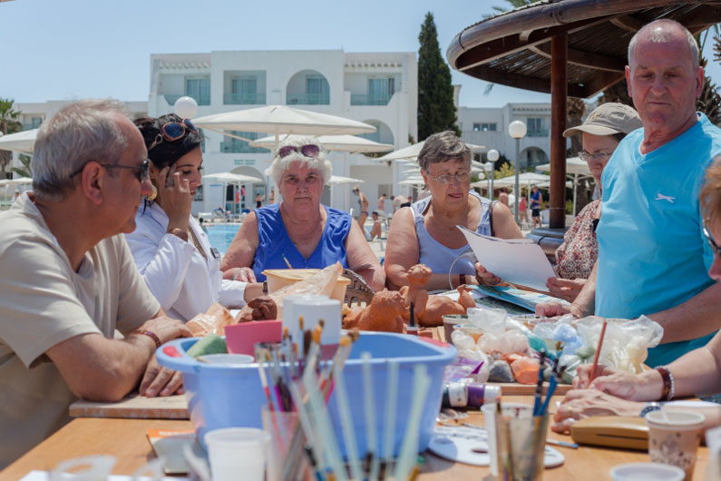
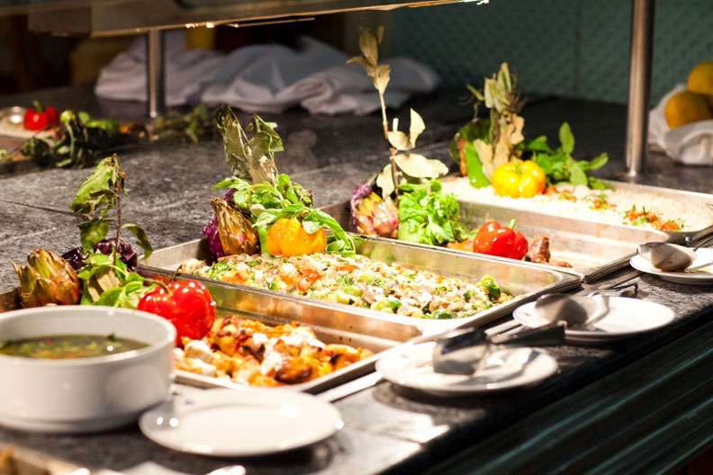
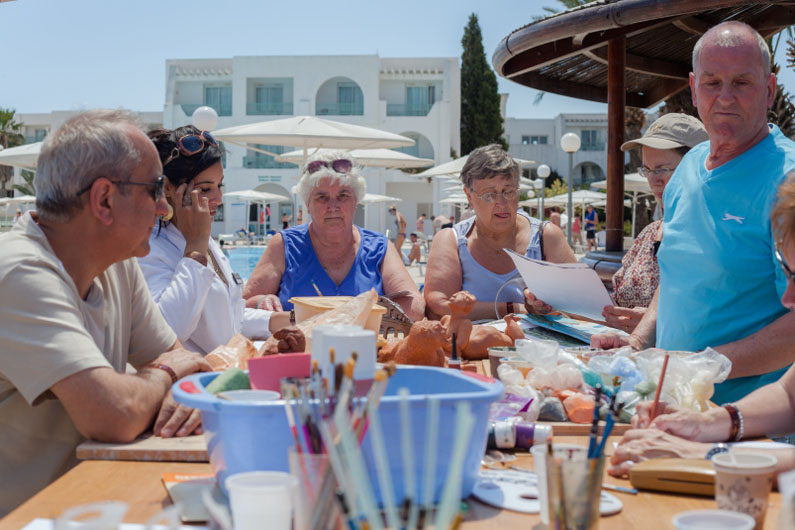
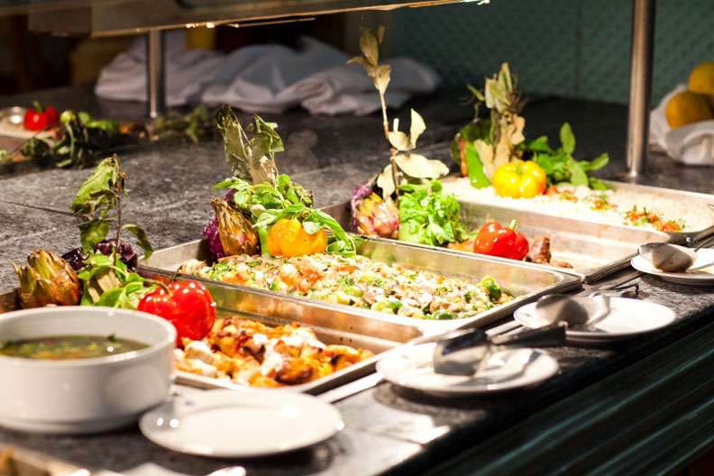
 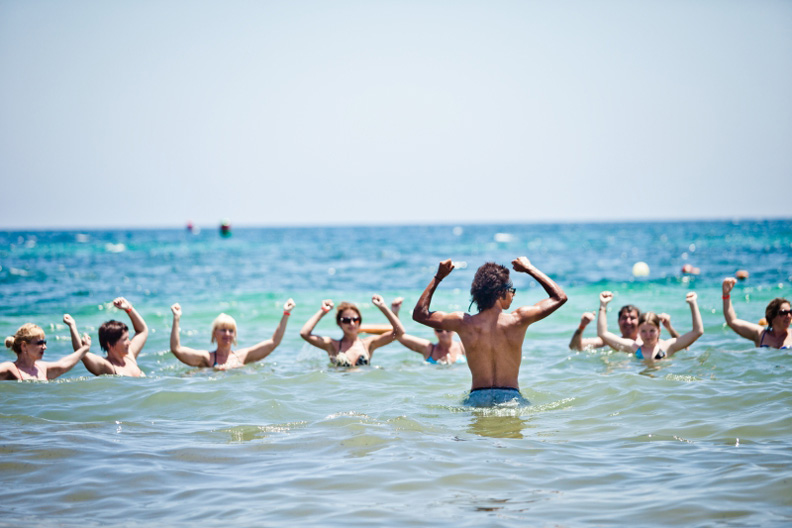
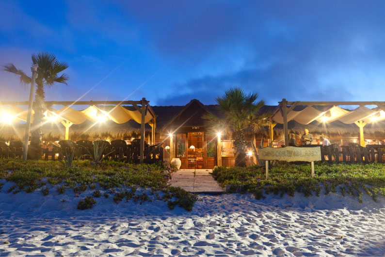
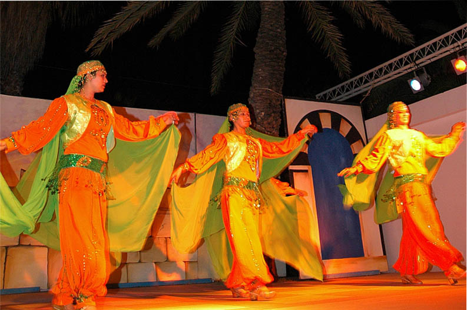
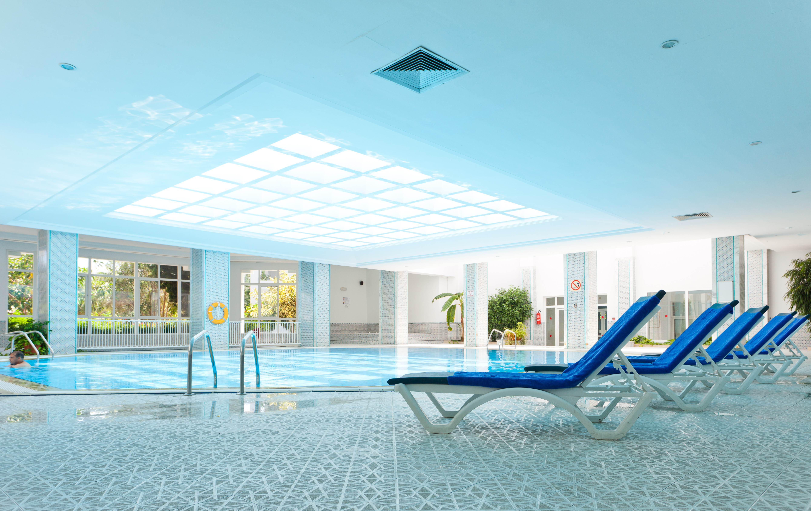
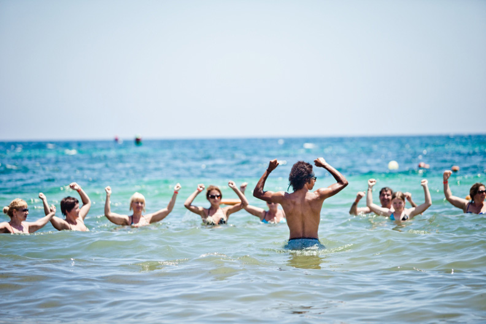
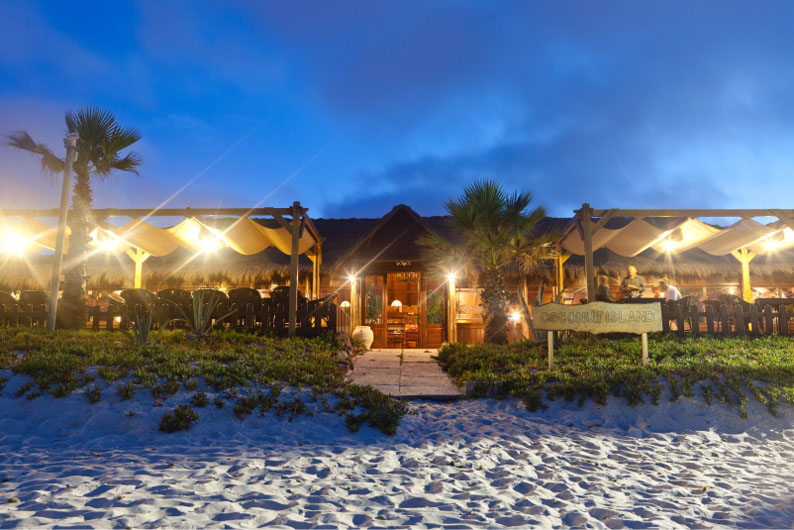
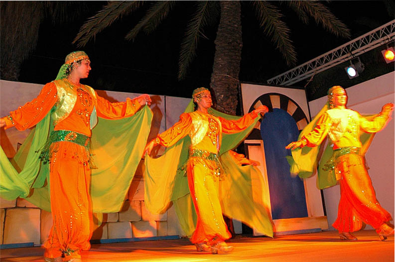
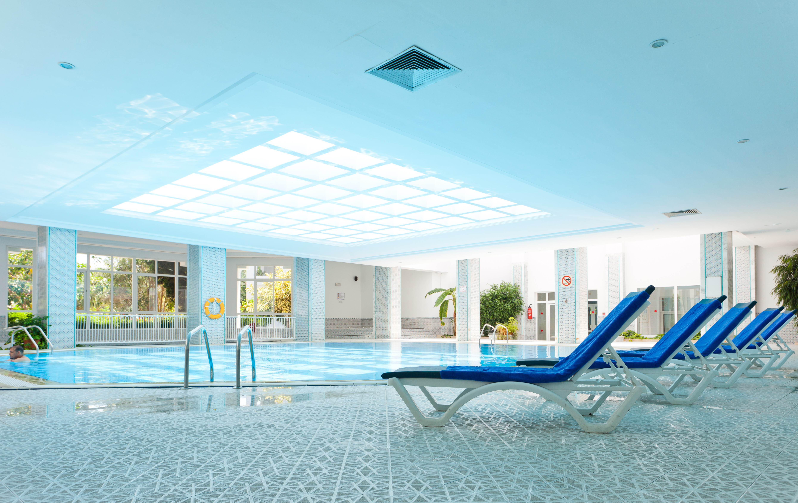
Le long d’une belle plage de sable fin, au centre de la zone touristique de Port El Kantaoui. L’hôtel El Mouradi Club Kantaoui est situé à 2 km d’un parcours de golf de 36 trous.
1,5 km du Port El Kantaoui (port de plaisance) et du Centre Commercial.

Situé au coeur de la station de Port El Kantaoui, face au parcours de golf de 36 trous et à 10 km de la ville de Sousse, l’hôtel longe une plage de sable fin.
Avec ses bâtiments blancs à l’architecture méditerranéenne, il séduit par sa convivialité et la qualité de ses services offerts à profusion.
Avec ses grands espaces, ses jardins et ses palmiers, cet hôtel est idéal pour les séjours en famille.
A 35 km de l’aéroport Habib- Bourguiba de Monastir,
40 km de l’aéroport d’Enfidha,
70 km de Yasmine Hammamet
140 km de l’aéroport de Tunis-Carthage.
L’hôtel El Mouradi El Menzah se trouve dans la station touristique de Yasmine-Hammamet à 10 Km du centre de la ville de Hammamet, à 4 km des terrains de golfe Yasmine et Citrus, à 65 km de l'aéroport International de Tunis.
El Mouradi El Menzah est prêt à accueillir ses hôtes en leur accordant toute l'attention nécessaire et les mesures de sécurité sanitaire conformes au protocole sanitaire du tourisme tunisien et en tenant compte des exigences légales et réglementaires dictées par le ministère de la santé et l'Organisation Mondiale de la Santé.